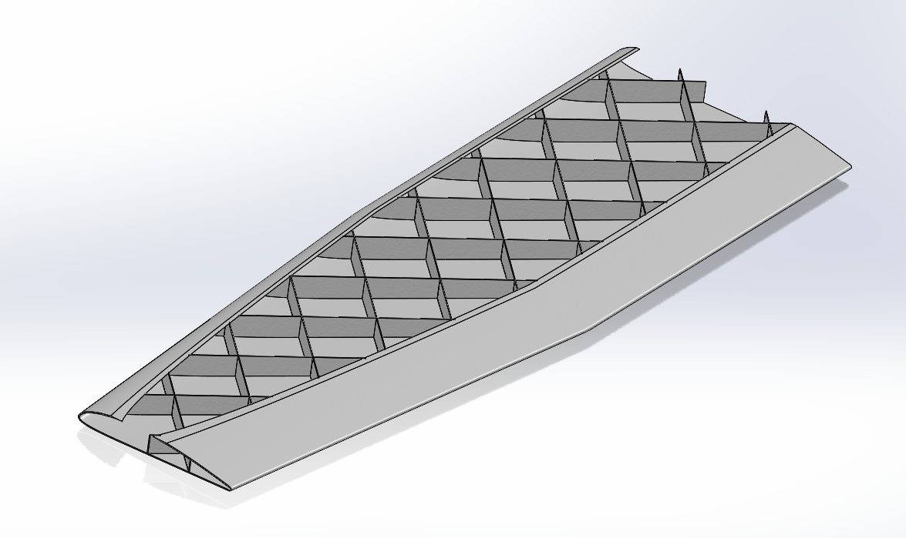
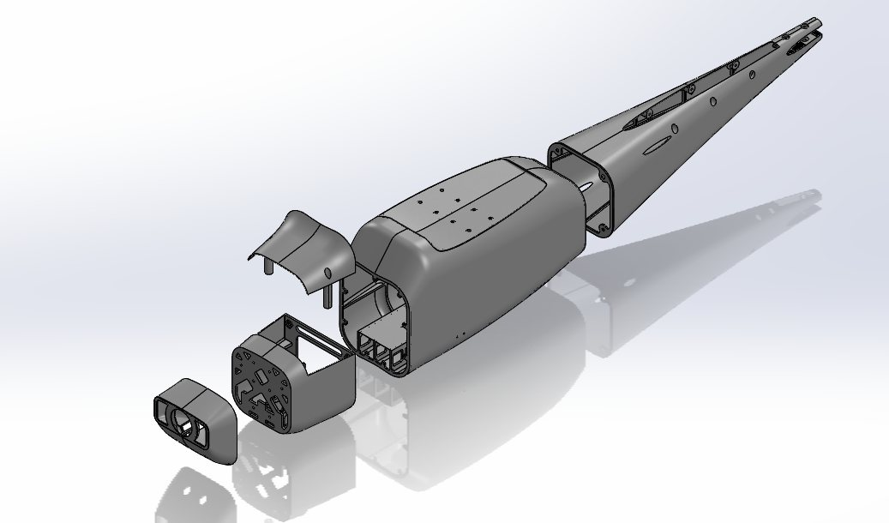
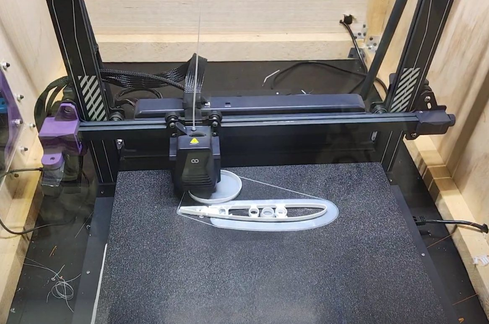
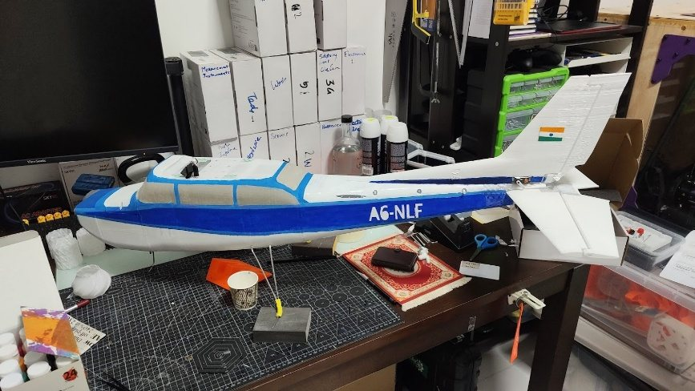
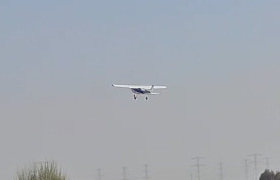
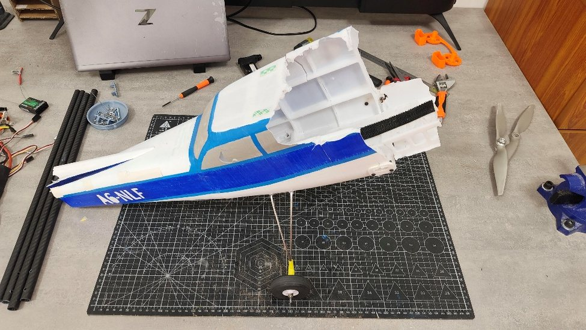

RC Cessna 172, 3D-Printed Flying Model
- Scale
- 1:8
- Span
- 1.42 m
- AUW
- 3.6 kg
- Battery
- 4S 3300 mAh LiPo
- Status
- Flown twice
A 1.42 m RC Cessna 172 drawn in SolidWorks from foamboard plans and printed in PETG on a desktop FDM printer. The first airframe took off but crashed after over-sensitive pitch control. The rebuilt airframe handled better, but trim and battery problems ended its flight in a second crash.
Minor project for B.Tech Aerospace Engineering at Amity University Dubai. Report submitted 5 January 2026; faculty Dr Efstratios Ntantis. The sections below follow that report, which covers the first airframe. The rebuild is at the end.
Interactive model
Loading 3D model…
Drag to rotate, scroll or pinch to zoom, right-drag or two fingers to pan. Two section sliders cut the model, and only one works at a time: moving one switches the other off. The cross-section starts at the nose and moves toward the tail. The side section is parallel to the right plane, starts at the left wingtip and moves across to the right, with the centreline halfway along the slider. 0 mm is no cut and the cut face is shaded blue-grey. Isometric shows both cuts, Front suits the cross-section and Side suits the side section.
Design basis
The geometry comes from the Flite Test foamboard Cessna 172 plans. They were imported into SolidWorks as scaled reference images, and the airframe was rebuilt parametrically rather than traced. Starting from an existing plan kept the project on manufacturing instead of sizing a new configuration. The goals were a stable high-wing trainer with better scale fidelity than foamboard, built from commodity PETG and off-the-shelf RC parts, at a lower cost than a comparable ready-to-fly trainer.
| Parameter | Value |
|---|---|
| Configuration | High wing, fixed tricycle gear, aileron, elevator, rudder and flaps |
| Wingspan | about 1420 mm (56 in) |
| Mean chord | about 230 mm |
| Wing area | about 0.32 to 0.34 m², estimated from the plan |
| Airfoil | Clark Y based, slight dihedral |
| Tail sizing | Horizontal tail about 30% of wing area; vertical tail over 50% of horizontal tail area |
| Estimated mass | 3.5 kg (foamboard reference: about 1.2 kg) |
Structure and manufacturing
Each part was designed around FDM limits: the printer's 480 mm build height, print orientations that limit supports, and a 0.8 mm shell that equals two perimeters. External surfaces are airfoil-based surface lofts, thickened to a printable skin.
- Vertical tail
- Internal X-shaped lattice, patterned along the span and oriented to print upright without supports.
- Horizontal tail
- No internal structure, only low infill. A trailing-edge clearance gap for the elevator, and 1.5 mm steel rods as continuous hinge pins.
- Wing
- X-type rib and web lattice, with segments removed in low-stress regions and kept near the root and spar attachments. Channels for carbon-fibre spar tubes, and countersunk through-holes at the root for the wing bolts. Printed in two spanwise sections.
- Fuselage
- Lofted, then shelled to 0.8 mm (two perimeters) and split into three longitudinal sections to fit the build height. Internal ribs and formers, reinforced pass-throughs for the spring-steel landing gear, nut-retention pockets for the wing bolts, a motor mount, a nose-wheel servo mount and an avionics platform. Forward inlets and baffles guide air over the motor and electronics.


Print settings
White, unpigmented 1.75 mm PETG for all printed parts, chosen for impact resistance and ductility over PLA.
| Region | Strategy |
|---|---|
| Most parts | Two-perimeter walls |
| Ribs, formers, local reinforcement | 15% infill |
| Tail surfaces | About 4 to 5% infill |
| Supports | Manually placed tree supports at critical overhangs only |

Components and electronics
| Component | Part |
|---|---|
| Motor | DYS G-Power 3548, 900 KV |
| Propeller | GEMFAN D11×5.5 in, nylon |
| ESC | Skywalker V2, 60 A |
| Battery | HRB 4S 3300 mAh LiPo |
| Servos | Emax ES08MAII on the control surfaces; TowerPro MG90S metal-gear for nose-wheel steering |
| Receiver | FlySky FS-iA10B |
| Flight controller | ZMR NX4 Pro, for stabilisation and telemetry |
| Structure and hardware | Carbon-fibre spar tubes, Ø3 mm spring-steel landing-gear wire, Araldite two-part epoxy, M3 and M4 bolts, PU tyres Ø63 mm and Ø51 mm |
Radio setup
Ten channels. The flaps have three positions (retracted, take-off, landing), with left and right servos mixed in the receiver. To reduce the pitch sensitivity seen in testing, aileron, elevator and rudder run at 75% exponential. Nose-wheel steering is mixed from the rudder and limited to 70% of it. A rate switch selects low or high rates in the flight controller, and separate switches cut the throttle and select ESC reverse.
Assembly
The motor sits on a 5 mm plywood plate that isolates the printed nose from vibration. The tail surfaces were epoxied on, and all internal systems were installed and tested before the three fuselage sections were epoxied together. The wing was fitted with its servos, tested for deflection and symmetry, and bolted on so it can come off for transport. The landing gear is Ø3 mm spring steel with soldered copper-wire joints. Centre of gravity was checked by hanging the finished aircraft from a beam clamped to a desk, then adjusted where needed to meet the design's stability requirements.

First flight and failure analysis
The final take-off attempt showed thrust well above what take-off needed, a short ground roll before lift-off. Straight after lift-off the aircraft pitched up hard, which the report attributes to high pitch control sensitivity. The pilot's corrections overshot, producing growing pitch oscillations coupled with an unintended left bank. The aircraft entered a descending spiral and hit the sand at low altitude.

What the wreck showed
- Cause: control tuning and handling, not a fundamental aerodynamic or structural fault. Take-off performance and propulsion were adequate.
- Wing: minor cracking along layer boundaries and a small piece lost where it struck first. The internal structure stayed intact, and the carbon spar tubes showed no fracture, buckling or permanent deformation.
- Fuselage: nose destroyed, and the tail failed in bending and torsion. The centre section and landing-gear junction were largely unaffected, which suggests the added ribs, formers and local reinforcement there worked.
- Electronics: motor, ESC, servos, battery and flight controller survived. The receiver was the exception, with a broken antenna.
- Takeaway: the shell acted as a sacrificial structure. The nose and tail are where targeted reinforcement or energy-absorbing features would help.

Rebuild and second flight
After the first crash the aircraft was reprinted with reduced control sensitivity, retuned rates and refined control-surface deflections. The second flight handled better than the first, but the aircraft had trim problems and the battery ran out unexpectedly, which ended in a second crash. The rebuilt airframe uses spiral-vase PETG wings and a three-piece fuselage, and its short endurance traced back to high structural weight.
Video from LinkedIn. Open it on LinkedIn if it does not load.
Further work in the report: snap-fit and self-aligning features to cut adhesive joints, and wiring channels, servo mounts and avionics bays printed into the structure.